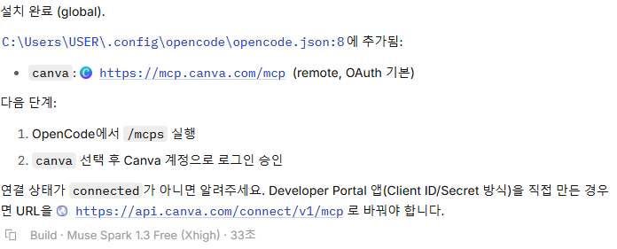
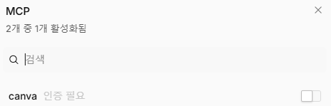

상세 과정
AI로 Canva 다루기 - 수업 PPT 초안 만들기
AI 앱에 Canva MCP 설치를 요청하고, Canva 계정으로 로그인한 뒤 수업 PPT 초안을 만들어봅니다.
실습 순서
Canva MCP 설치 요청하기
AI 앱에 Canva MCP를 설치해 달라고 요청합니다.
AI에 이렇게 요청해 보세요
캔바 mcp 설치해줘

MCP를 켜고 로그인하기
Canva MCP를 설치한 뒤 AI의 안내에 따라 MCP를 연결하고 Canva 계정으로 로그인합니다. 연결을 승인한 뒤 AI 앱에 로그인했다고 알려줍니다. AI의 답변이 어려우면 쉽게 설명해 달라고 다시 요청합니다.

AI에 이렇게 요청해 보세요
/mcp
MCP 목록에서 Canva 선택하기 
프레젠테이션 스킬 조사하기
AI 앱에 프레젠테이션 자료를 만드는 데 쓸 스킬을 조사하고 설치해 달라고 요청합니다. 스킬을 이용하면 더 퀄리티 좋은 프레젠테이션을 만들 수 있습니다.
스킬은 AI가 더 잘 일할 수 있도록 하는 안내서입니다. AI에게 요청해 스킬을 직접 만들 수도 있습니다.
AI에 이렇게 요청해 보세요
프레젠테이션 자료를 만드는 스킬을 조사해서 설치해줘.
수업 PPT 초안 만들기
앞 단계에서 설치한 프레젠테이션 스킬을 사용해 Canva MCP로 수업 PPT 초안을 만들어 달라고 요청합니다. 학년·교과·주제 등 필요한 내용은 AI가 먼저 질문하도록 합니다.
AI에 이렇게 요청해 보세요
설치한 프레젠테이션 스킬을 사용해서 Canva MCP로 수업 PPT 초안을 만들어줘. 필요한 내용은 먼저 질문해줘.